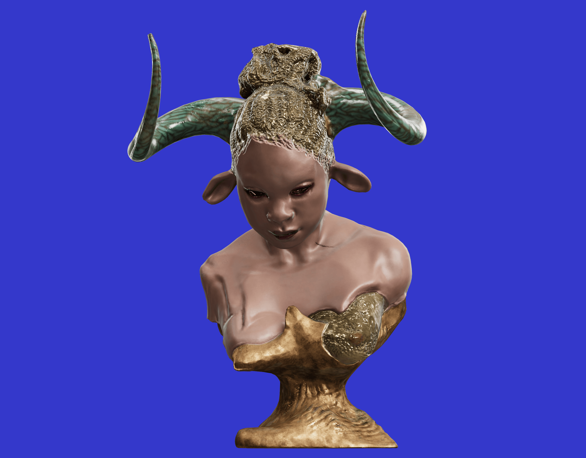
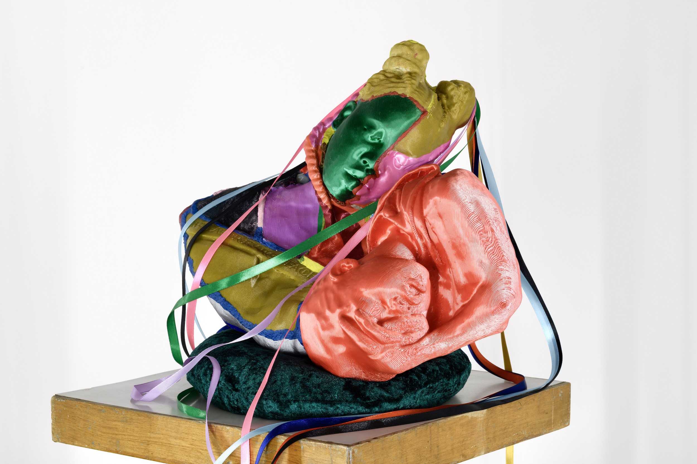

In Aureia Harvey interview, she talks about how she was involved with tech at a young age. Aureia her mom placed her in a computer club for kids she messed around with tech such as Commodore vic-20 which is a box that you hook to the tv allowing you to program stuff were she learned her basic coding and enjoyed things such as early text based games. During Aureia teen years she hated computers because it was not something black girls did and this made her stay away. Aureia talks about graduating college as a sculptor but the difficulty of finding a studio until landing on the internet. When Aureia encounters the internet she loved it learning html, since businesses did not realize the simplicity of the internet web developer at the time were getting paid a bunch to make websites. Aureia started her own company combining her skills in art with creating websites making net art. Through the internet Aureia meets many people as well as her husband. I feel like similar to the The History of net art - 2014 reading net artists wanted valued for who there art and the uniqueness in what they do just as Aureia who turned down a invitation to be apart of the Whitney Biennial. Video games interactive art form and was unexplored as a art form with a more appreciative audience for the work put out which was rare in the art world. Aureia made the switch to net art to video games for this reason. Although a OG Web1 artist, Aureia now works on the Web3 platform were the possibilities are endless. With the art she makes it can either be an imagination or an actual 3D scan. Working with digital content provide there are no borders. As stated by Aureia 3D printing was a "way of actualizing virtual sculptures". What i get from reading Aureia's interview is that she as a artist wants to be seen and respected from her days doing net art to switching to video games because it was a much better scene that respected what she do to web3 and digital art were she is now 3D printing and expressing herself in a new scene were possibilities are endless and the times are different.
 